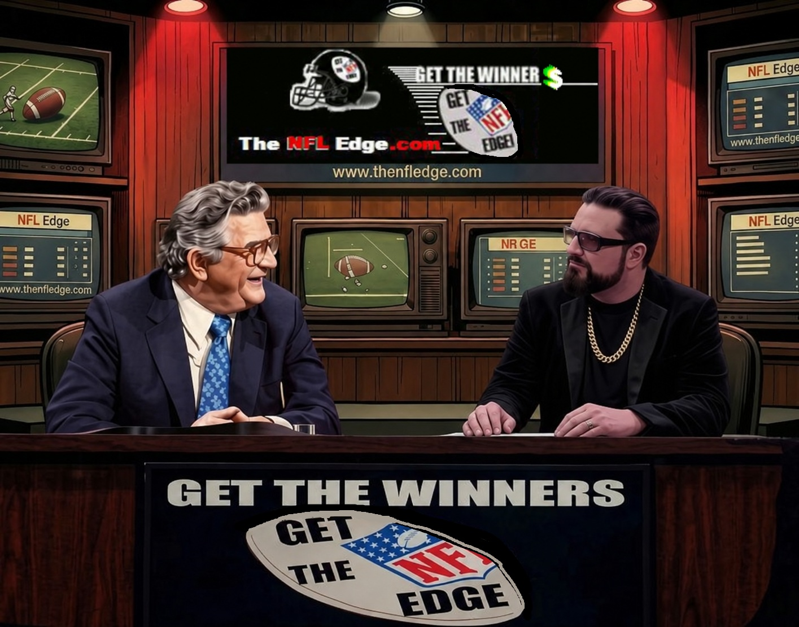

The man behind the edge
About The NFL Edge
In 2025, Greggy the Greek brought an old formula back to life—and put it to the test. A retrospective run across the full NFL season produced a 242–30 straight-up record: approximately 89% winners. For Greggy, it was a powerful reminder of what decades of football knowledge and computer analysis could achieve together.
That result was the latest chapter in a story that began long before automated data feeds and modern analytics. It started with a young quarterback, a fascination with mismatches, and a simple idea: look for the edge.

Finding the edge
As a young quarterback in the late 1970's, Greggy quickly learned to spot mismatches and identify weaknesses—and to turn that insight into an advantage. Under his Uncle Jimmy's tutelage, he developed a sharp eye for opportunities in the point spread and betting lines and learned how the data could be used to reveal that advantage and project those mathematical advantages. Jimmy's assertions to "just get the winners" became the guiding principle behind the approach that would eventually be known as The NFL Edge.
In the early 1980s, handwritten ledgers gave way to computer programs that made calculating his score projections easier. During the 1990s, downloadable data and spreadsheets helped him experiment with and refine the formula that would become The NFL Edge.
The NFL Edge goes online
In 1998, Greggy's football projections—shared primarily on bulletin boards and Usenet groups—grew into a product with the debut of TheNFLEdge.com. Using his computer's projections, he manually prepared NFL score predictions that became a popular, dependable way for the early online community to access his picks—and marked the start of The NFL Edge.
The early years were chaotic: in 1998 and 1999, Greggy moved between providers and hosting plans before finding a more sustainable home for TheNFLEdge.com. As he refined the platform, he preserved issues dating back to 2000. The archives let you explore those projections, results, and the site's history for yourself.
The hiatus and the return
Changes in the online wagering landscape, lost sponsors, and a shrinking audience eventually led to the site's retirement. Greggy announced the end of The NFL Edge in 2017 and gave up the domain in 2019.
After recovering TheNFLEdge.com in 2024, Greggy set out to relaunch The NFL Edge with a new twist: automate the hours of research and preparation and remove the manual bottlenecks. With help from AI, APIs, and automated workflows, he began building a system to generate computer-derived score projections and publish them as a fully automated new The NFL Edge. A 2025 pilot program tested the end-to-end projection and publication process in a hands-off workflow offline to prove its reliability before going live.
A new era: the UFL and NFL Edge
In 2026, Greggy brought the automated pipeline to the UFL Edge as a smaller-scale proving ground for the new NFL Edge paradigm. Recorded season totals were 21–14 straight up (60%) and 20–15 against the spread (57.14%).
After challenges with the automation pipeline, the renewed NFL Edge debuted hours before the 2026 season kickoff. Its first-week issue recorded 10–6 straight up (62.5%) and 11–5 against the spread (68.75%). This proved that Yes Baby, Greggy the Greek and his The NFL Edge were officially BACK!!
More than 40 years of football, handicapping, and programming. One continuing search for the edge.
The Edge lives on
Today, The NFL Edge brings that experience into an automated projection engine. It gathers team statistics, matches opponents, and applies Greggy's formula to project a score for each game. From calling plays as a kid to teaching a computer how to evaluate a matchup, the aim has stayed the same: use the numbers, understand the game, and look for the winners.
For now, The NFL Edge remains a free, no-sign-up, no-BULLSHIT resource for NFL picks and score projections. As Uncle Jimmy used to say, “Just give me the winners, kid.” Greggy's answer: Get the winners... Get the Edge. TheNFLEdge.com.
View the NFL score projections | Explore the archives
The end—for now.